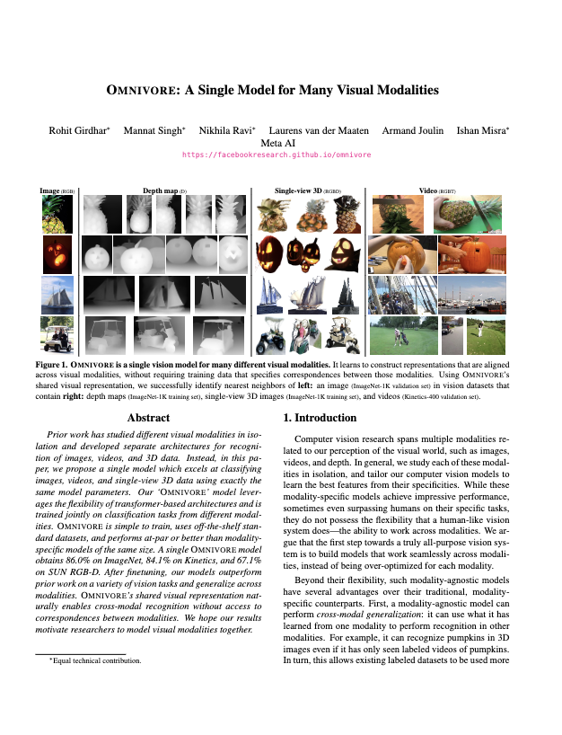

Omnivore: A Single Model for Many Visual Modalities

|
| Prior work has studied different visual modalities in isolation and developed separate architectures for recognition of images, videos, and 3D data. Instead, in this paper, we propose a single model which excels at classifying images, videos, and single-view 3D data using exactly the same model parameters. Our 'OMNIVORE' model leverages the flexibility of transformer-based architectures and is trained jointly on classification tasks from different modalities. OMNIVORE is simple to train, uses off-the-shelf standard datasets, and performs at-par or better than modality-specific models of the same size. A single OMNIVORE model obtains 86.0% on ImageNet, 84.1% on Kinetics, and 67.1% on SUN RGB-D. After finetuning, our models outperform prior work on a variety of vision tasks and generalize across modalities. OMNIVORE's shared visual representation naturally enables cross-modal recognition without access to correspondences between modalities. We hope our results motivate researchers to model visual modalities together. |
People
 Rohit Girdhar |
 Mannat Singh |
Nikhila Ravi |
Laurens van der Maaten |
 Armand Joulin |
 Ishan Misra |
Paper
|  |
R. Girdhar, M. Singh, N. Ravi, L. van der Maaten, A. Joulin and I. Misra Omnivore: A Single Model for Many Visual Modalities IEEE/CVF Conference on Computer Vision and Pattern Recognition (CVPR), 2022 [arXiv] [code/models] [BibTex] |